Archinstall
info
나 혼자 보려고 만들었다.
부팅 USB 만들기
lanet 에 접속해서 최신 iso 를 다운받는다
들어가보면 archlinux-2020.11.01-x86_64.iso 같이 생긴게 있을텐데 클릭해서 다운받는다. 아치리눅스의 iso 파일은 그렇게 무겁지 않다.
에 접속해서 Balena Etcher 을 다운받는다. 모든 OS 에서 돌아가는 프로그램이다. 물건이네 이거
파일을 눌러 실행시키자. 이때 주의점은 관리자로 실행시켜야 한다 라는 것이다.
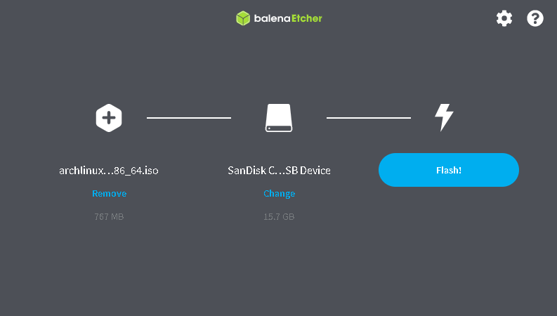
관리자로 실행시켰으면 iso 와 부팅 usb 가 될 디스크를 선택하고 Flash 를 누른다.
Flash 를 누르면 usb 안의 모든 데이터가 없어진다. 새로 산 usb 나 쓸모 없는 usb, 아니면 내용물을 백업해놓고 진행한다.
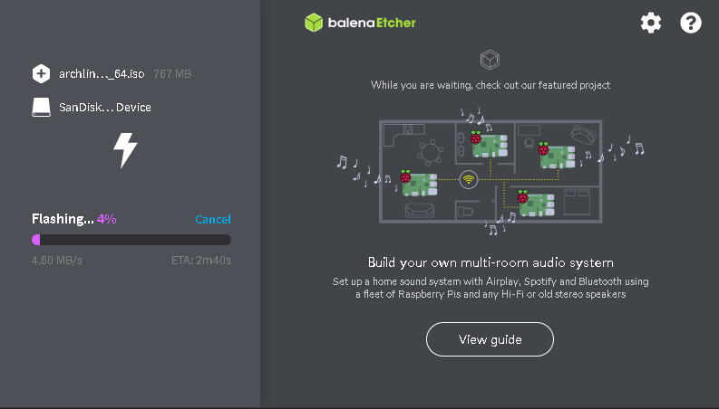
그렇게 기다리다 보면 끝나있을것이다.
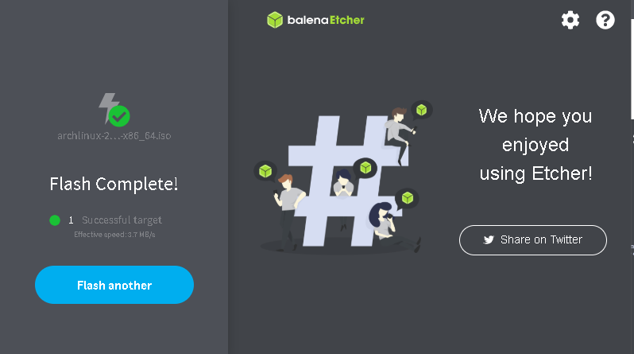
부팅 USB 를 만들었다!
USB 를 UEFI 로 부팅
UEFI로 부팅을 해야 한다. 바이오스로 들어가야 하는데 컴퓨터마다 다르다. 보통 F2나 Delete 키다. 전원버튼 누르고 연타하다 보면 바이오스가 나올것이다. 거기서 USB 를 맨 위로 올려주면 된다. TUI 일 경우에는 + 와 - 로 올려주고, GUI 일 경우에는 마우스로 드래그하면 된다. UEFI 를 켜는 방법은 기기마다 다르니 구글링 ㄱㄱ. 잘 찾아보면 Enable EFI 같이 생긴게 있을것이다. 그리고 저장하고 나가기 (보통 F10 이다) 를 누르면 USB 로 부팅되는것을 볼 수 있다.
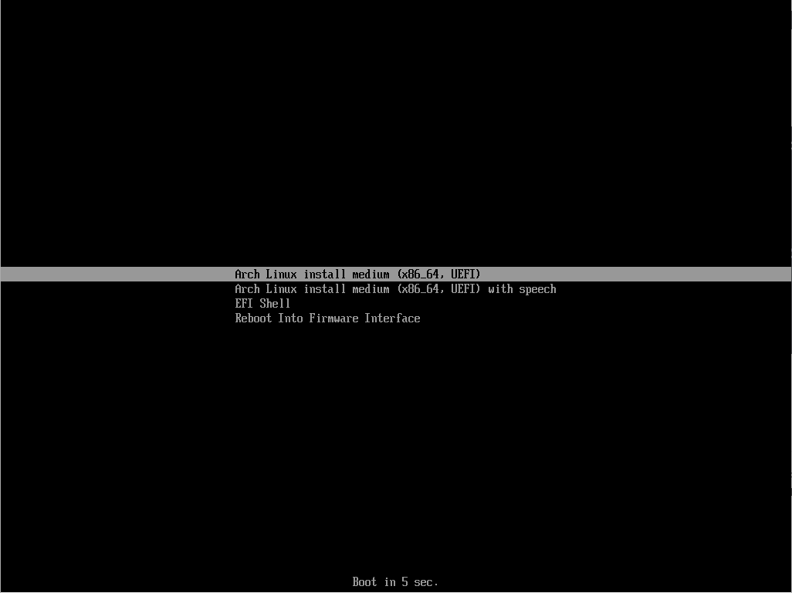
이런식으로 나오면 UEFI 로 부팅된게 맞다.
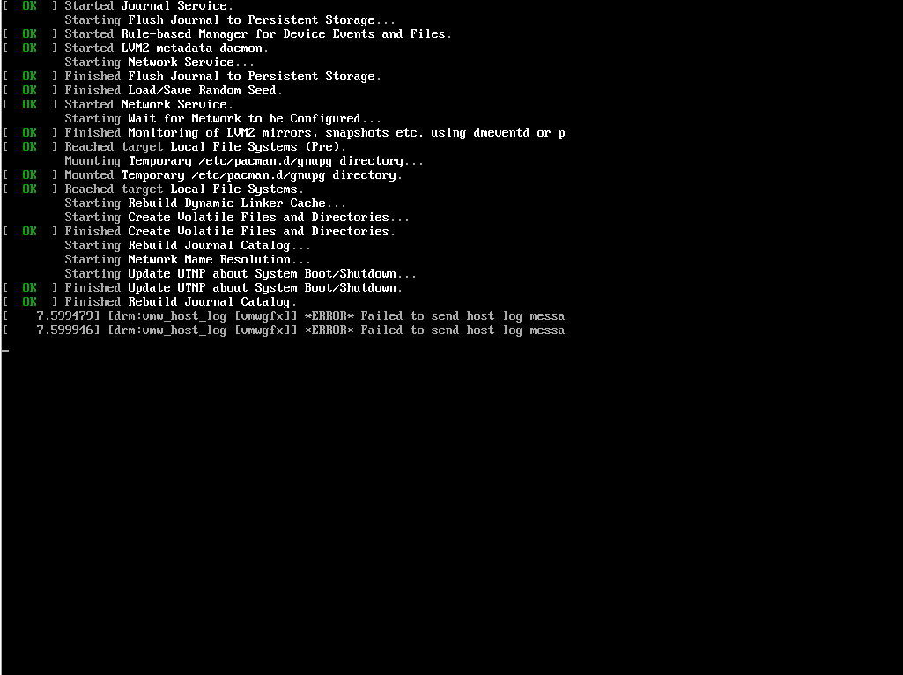
(스샷을 위해 가상머신에서 부팅중)
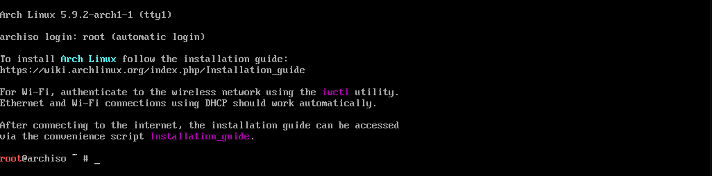
이제 준비 되었다! 제대로 깔아보자
파티션 설정
lsblk로 파티션을 볼 수 있다. 깔고 싶은 파티션을 정한 뒤
|
|
loop0 이나 sdb, rom b 같은건 건드리지 말자. 램이나 usb 면 난리난다. nvme0n1 같은 식이어도 설치 할 수 있다.
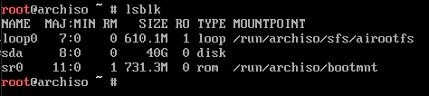
cfdisk /dev/EFI 시스템 위치
맨 위에 GPT 라고 나와 있어야한다. 물어보면 GPT나 Primary 를 선택한다. 있는건 전부 delete 키로 지워서 Free Space 만 남게 한다.
방향키로 아래 메뉴를 움직일 수 있다. new 에서 엔터, 1G 를 치고 엔터, 4G 를 치고 엔터, 그리고 그대로 엔터 친다.
그럼 대충
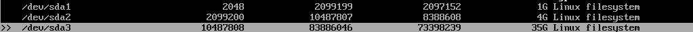
이런 모양이 나왔을것이다. 아래에서 Type 으로 위에서부터 EFI System, Linux Swap, Linux Filesystem 을 선택한다.

없다면 MBR 인것이다.
다 하고 나면 대충
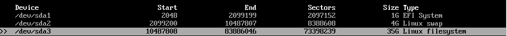
이런 모양이 되었을것이다. 그 상태로 Write 에 가서 엔터, yes 를 치고 q 로 나온다. 되돌릴 수 없다
이제 파티션 설정은 끝났다. 다시 lsblk 로 확인해보자. 맞지 않다면 cfdisk 를 다시 해보고 그래도 안되면 재부팅 해야한다.
포맷
|
|
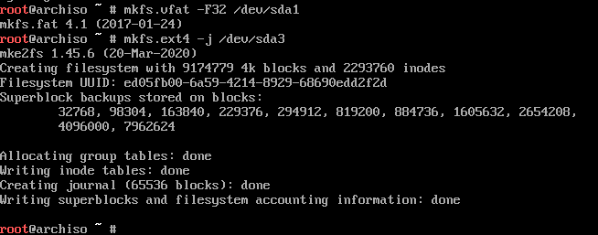
이렇게 나오면 된다.
마운트
|
|
미러 설정
nano /etc/pacman.d/mirrorlist
로 /etc/pacman.d/mirrorlist 를 수정한다. Server = 으로 시작하는 곳 윗줄 아무곳에나
|
|
를 적는다. ctrl + x 하고 y, 엔터로 저장하고 나갈 수 있다.
인터넷 연결
iwctl
으로 네트워크 설정으로 들어갈 수 있다. 왼쪽에 초록색으로 [iwd] 거리면 됨. 거기서
|
|
하고 비밀번호를 쳐주면 인터넷에 연결할 수 있다.
exit 을 쳐서 iwctl 에서 나간다.
|
|
해서 아이피 나오고 하면 인터넷에 연결된것이다.
기본 패키지 설치
|
|
으로 패키지들을 다운받는다. 따로 다운받고 싶으면 뒤에 이름을 붙이면 된다.
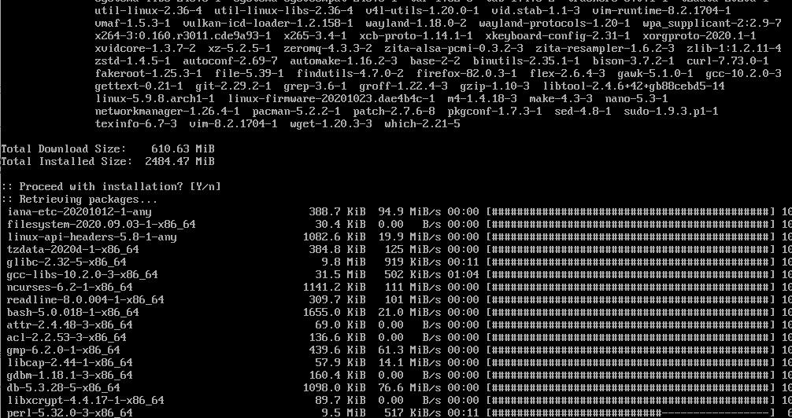
genfstab
genfstab : generate File System table
|
|
루트로 아치리눅스 진입
|
|
arch-change root
locale 설정
|
|
시간 설정
date
쳐서 시간이 맞으면 스킵
|
|
기기 시간 설정
|
|
로컬 시간 설정
|
|
서울 시간으로 맞춘다
사용자 추가
|
|
해서
#%whell ALL=(ALL) ALL 만 주석을 풀어준다.
비번 설정
passwd 유저 이름 해서 사용자 비번 추가
passwd 해서 관리자 계정 비번 추가
컴퓨터 이름 설정
|
|
부팅 설정
|
|
vim 창이 뜨면 다 지우고 내용이
|
|
가 되도록 변경
저장하고
vim /boot/loader/entries/arch.conf
로
|
|
가 되게 만든다.
echo "options root=PARTUUID=$(blkid -s PARTUUID -o value /dev/파일 시스템 위치) rw">> /boot/loader/entries/arch.conf
하고
cat /boot/loader/entries/arch.conf
로 확인해보면
맨 아랫줄에
options root-PARTUUID=아이디 rw
요렇게 되어있을것이다.
저장하고
|
|
해서 usb 빼고 부팅 되면 성공